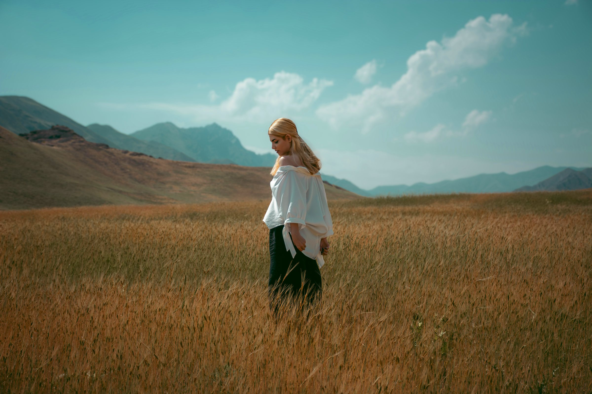
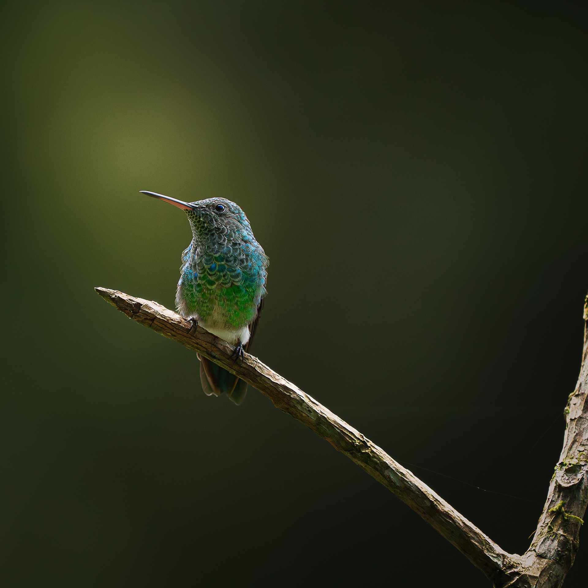

En peligro crítico
Crax alberti
El Paují
Abrigo largo en lino belga, teñido en pigmentos naturales. Endémico del Caribe colombiano.
$ 390.000
▸ eBird

Prendas atemporales en fibras naturales, inspiradas en las aves de Colombia. Cada pieza es un pequeño acto de protección — y una invitación a vestir con conciencia.
Abrigo largo en lino belga, teñido en pigmentos naturales. Endémico del Caribe colombiano.
Camisa fluida en algodón orgánico certificado GOTS. Endémico de Santander.
Pañuelo tejido en fibras vegetales de bajo impacto. Endémica de los Andes.
La primera cápsula despega en 2026. Sé de las primeras personas en vestir con conciencia — y en recibir la historia de cada ave que protegemos.
Sin spam. Solo aves, ciencia y lanzamientos.
ORNITHEA nace de un asombro: la contemplación de las aves como símbolo de libertad, serenidad y armonía con lo vivo.
A través de la fotografía y la observación de sus hábitats, surge una conciencia aguda sobre la fragilidad de estos ecosistemas. La industria del fast fashion ha normalizado la desconexión entre el vestir, la vida y la naturaleza. ORNITHEA responde proponiendo una moda que reconecta al ser humano con el mundo desde el respeto, la educación y la belleza consciente.

ORNITHEA es vestir con conciencia. Es elegir menos, pero mejor.
La sostenibilidad como visión integral, no como atributo de marketing. Cada decisión pasa por el mismo filtro ético.
Elegancia atemporal que se siente, no que se exhibe. Estética yūgen: la belleza más profunda no se grita — se intuye.
Conciencia ambiental tejida en cada prenda. Conocimiento ornitológico integrado y ciencia ciudadana vía eBird.
de las poblaciones de aves han desaparecido desde 1970.
de las aves marinas ingiere microplásticos de fibras textiles.
prendas de fast fashion reemplaza una sola pieza ORNITHEA.
mínimo de las ventas, destinado a conservación de hábitats.
«Cada prenda que crea ORNITHEA constituye, en el sentido científico más literal, un pequeño acto de protección de las aves y los ecosistemas.»
«Porque cada nido que protegemos es una especie que continúa.»Un programa de ORNITHEA
Abrimos convocatoria dos veces al año, en la web y redes. Período abierto de 30 días.
Enero / JulioLa organización envía el formulario oficial con un plan de inversión detallado del proyecto.
nidos@ornithea.comUn comité evalúa cada postulación con un sistema de 100 puntos y aprueba el plan.
Comité de selecciónLa organización ejecuta el proyecto; el aporte se desembolsa al cierre, con rendición pública.
Pago al cierre